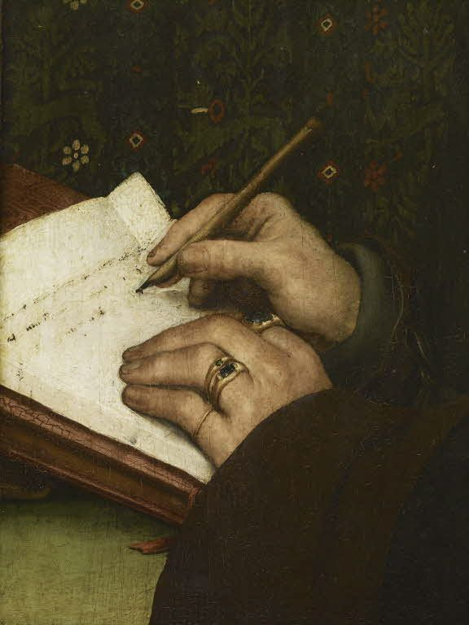

La inmensidad del mundo frente al
|
Ruta Temática Emily Dickinson |
Para hacer una pradera se necesita un trébol y una abeja,
un trébol y una abeja,
y ensueño.
El ensueño solo servirá,
si las abejas escasean.
Porque no pude detenerme ante la Muerte,
Él amablemente se detuvo por mí;
El carruaje sólo nos contenía a Él
y a la Inmortalidad.

Esta es mi carta al mundo,
que nunca me escribió,
las simples noticias que la Naturaleza contó
con tierna majestad.